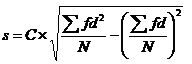

STAM101 :: Lecture 05 :: Measures of dispersion - Range, Variance -Standard deviation – co-efficient of variation

Computation of the above statistics for raw and grouped data
 Measures of Dispersion
Measures of Dispersion
The averages are representatives of a frequency distribution. But they fail to give a complete picture of the distribution. They do not tell anything about the scatterness of observations within the distribution.
Suppose that we have the distribution of the yields (kg per plot) of two paddy varieties from 5 plots each. The distribution may be as follows
Variety I |
45 |
42 |
42 |
41 |
40 |
Variety II |
54 |
48 |
42 |
33 |
30 |
It can be seen that the mean yield for both varieties is 42 kg but cannot say that the performances of the two varieties are same. There is greater uniformity of yields in the first variety whereas there is more variability in the yields of the second variety. The first variety may be preferred since it is more consistent in yield performance.
Form the above example it is obvious that a measure of central tendency alone is not sufficient to describe a frequency distribution. In addition to it we should have a measure of scatterness of observations. The scatterness or variation of observations from their average are called the dispersion. There are different measures of dispersion like the range, the quartile deviation, the mean deviation and the standard deviation.
Characteristics of a good measure of dispersion
An ideal measure of dispersion is expected to possess the following properties
1. It should be rigidly defined
2. It should be based on all the items.
3. It should not be unduly affected by extreme items.
4. It should lend itself for algebraic manipulation.
5. It should be simple to understand and easy to calculate
Range
This is the simplest possible measure of dispersion and is defined as the difference between the largest and smallest values of the variable.
- In symbols, Range = L – S.
- Where L = Largest value.
- S = Smallest value.
In individual observations and discrete series, L and S are easily identified.
In continuous series, the following two methods are followed.
Method 1
L = Upper boundary of the highest class
S = Lower boundary of the lowest class.
Method 2
L = Mid value of the highest class.
S = Mid value of the lowest class.
Example1
The yields (kg per plot) of a cotton variety from five plots are 8, 9, 8, 10 and 11. Find the range
Solution
L=11, S = 8.
Range = L – S = 11- 8 = 3
Example 2
Calculate range from the following distribution.
Size: 60-63 63-66 66-69 69-72 72-75
Number: 5 18 42 27 8
Solution
L = Upper boundary of the highest class = 75
S = Lower boundary of the lowest class = 60
Range = L – S = 75 – 60 = 15
Merits and Demerits of Range
Merits
1. It is simple to understand.
2. It is easy to calculate.
3. In certain types of problems like quality control, weather forecasts, share price analysis, etc.,
range is most widely used.
Demerits
1. It is very much affected by the extreme items.
2. It is based on only two extreme observations.
3. It cannot be calculated from open-end class intervals.
4. It is not suitable for mathematical treatment.
5. It is a very rarely used measure.
Standard Deviation
It is defined as the positive square-root of the arithmetic mean of the Square of the deviations of the given observation from their arithmetic mean.
The standard deviation is denoted by s in case of sample and Greek letter s (sigma) in case of population.
The formula for calculating standard deviation is as follows
 for raw data
for raw data
And for grouped data the formulas are
 for discrete data
for discrete data
for continuous data
Where d = 
C = class interval
Calculate Standard Deviation
Example 3
Raw Data
The weights of 5 ear-heads of sorghum are 100, 102,118,124,126 gms. Find the standard deviation.
Solution
x |
x2 |
100 |
10000 |
102 |
10404 |
118 |
13924 |
124 |
15376 |
126 |
15876 |
570 |
65580 |
Standard deviation
Example 4
Discrete distribution
The frequency distributions of seed yield of 50 seasamum plants are given below. Find the standard deviation.
Seed yield in gms (x) |
3 |
4 |
5 |
6 |
7 |
Frequency (f) |
4 |
6 |
15 |
15 |
10 |
Solution
Seed yield in gms (x) |
f |
fx |
fx2 |
3 |
4 |
12 |
36 |
4 |
6 |
24 |
96 |
5 |
15 |
75 |
375 |
6 |
15 |
90 |
540 |
7 |
10 |
70 |
490 |
Total |
50 |
271 |
1537 |
Here n = 50
Standard deviation
= 1.1677 gms
Example 5
Continuous distribution
The Frequency distributions of seed yield of 50 seasamum plants are given below. Find the standard deviation.
Seed yield in gms (x) |
2.5-35 |
3.5-4.5 |
4.5-5.5 |
5.5-6.5 |
6.5-7.5 |
No. of plants (f) |
4 |
6 |
15 |
15 |
10 |
Solution
Seed yield in gms (x) |
No. of Plants |
Mid x |
d= |
df |
d2 f |
2.5-3.5 |
4 |
3 |
-2 |
-8 |
16 |
3.5-4.5 |
6 |
4 |
-1 |
-6 |
6 |
4.5-5.5 |
15 |
5 |
0 |
0 |
0 |
5.5-6.5 |
15 |
6 |
1 |
15 |
15 |
6.5-7.5 |
10 |
7 |
2 |
20 |
40 |
Total |
50 |
25 |
0 |
21 |
77 |
A=Assumed mean = 5
n=50, C=1
=1.1677
Merits and Demerits of Standard Deviation
Merits
1. It is rigidly defined and its value is always definite and based on all the observations and the actual signs of deviations are used.
2. As it is based on arithmetic mean, it has all the merits of arithmetic mean.
3. It is the most important and widely used measure of dispersion.
4. It is possible for further algebraic treatment.
5. It is less affected by the fluctuations of sampling and hence stable.
6. It is the basis for measuring the coefficient of correlation and sampling.
Demerits
1. It is not easy to understand and it is difficult to calculate.
2. It gives more weight to extreme values because the values are squared up.
3. As it is an absolute measure of variability, it cannot be used for the purpose of comparison.
Variance
The square of the standard deviation is called variance
(i.e.) variance = (SD) 2.
Coefficient of Variation
The Standard deviation is an absolute measure of dispersion. It is expressed in terms of units in which the original figures are collected and stated. The standard deviation of heights of plants cannot be compared with the standard deviation of weights of the grains, as both are expressed in different units, i.e heights in centimeter and weights in kilograms. Therefore the standard deviation must be converted into a relative measure of dispersion for the purpose of comparison. The relative measure is known as the coefficient of variation. The coefficient of variation is obtained by dividing the standard deviation by the mean and expressed in percentage. Symbolically, Coefficient of variation (C.V) =
If we want to compare the variability of two or more series, we can use C.V. The series or groups of data for which the C.V. is greater indicate that the group is more variable, less stable, less uniform, less consistent or less homogeneous. If the C.V. is less, it indicates that the group is less variable or more stable or more uniform or more consistent or more homogeneous.
Example 6
Consider the measurement on yield and plant height of a paddy variety. The mean and standard deviation for yield are 50 kg and 10 kg respectively. The mean and standard deviation for plant height are 55 am and 5 cm respectively.
Here the measurements for yield and plant height are in different units. Hence the variabilities can be compared only by using coefficient of variation.
For yield, CV== 20%
For plant height, CV== 9.1%
The yield is subject to more variation than the plant height.
| Download this lecture as PDF here |